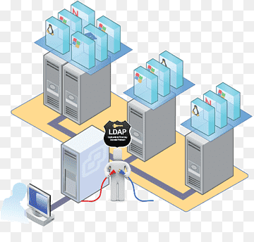
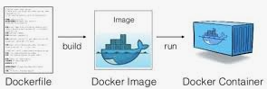

Es un proceso que permite dividir los recursos de hardware de un sistema en varios sistemas virtuales, denominados máquinas virtuales. Tambien la virtualización utiliza software para crear una capa de abstracción sobre el hardware del sistema que permite dividir los elementos de hardware de un sistema. Procesadores, memoria, almacenamiento, etc.
La virtualización es una tecnología que permite crear servicios de TI útiles, con recursos que están tradicionalmente limitados al hardware. Gracias a que distribuye las funciones de una máquina física entre varios usuarios o entornos, posibilita el uso de toda la capacidad de la máquina
A continuación se dara a conocer uno de los muchos tipos de virtualización que existen:
Docker le proporciona una manera estándar de ejecutar su código. Docker es un sistema operativo para contenedores. De manera similar a cómo una máquina virtual virtualiza (elimina la necesidad de administrar directamente) el hardware del servidor, los contenedores virtualizan el sistema operativo de un servidor.
Evaluación desarrollada el dia sabado 09 de diciembre del 2023.